Introduction to Bayesian Data Analysis
ZHANG Xiaowei
HKUST
Self-introduction (张晓炜)
- Education
- Ph.D. in Operations Research, Stanford University, 2011
- B.S. in Mathematics, Nankai University, 2006
- Research
- stochastic simulation
- data-based service engineering
Overview
Part 1. Fundamentals of Bayesian Inference
What and why?
One-parameter models
- Binomial model
- Poisson model
- Exponential family and conjugate priors
Normal model
- Infer mean with known variance
- Jointly infer mean and variance
Part 2. Monte Carlo Methods
- Baisc Monte Carlo
- Monte Carlo integration
- Random variable generation
Markov chain Monte Carlo
- Slice sampler
- Metropolis-Hastings algorithms
- Gibbs sampler
1. What and Why?
Probability
I have 50% probability of getting a head when flipping a coin
An Olympic shooter has 95% probability of hitting the target
Weather forecast indicates 80% probability of raining tomorrow
A cancer patient was told that he had 60% chance of surviving for at least 5 years
- There are two possible ways to interpret probability
- Frequency
- Belief
Frequency
- Classical.
- Example. We expect to get a head about half the time if we flip a coin many many times
However, repeated experiments are not possible in many situations
- What is the probability that another terrorist attack of the “9-11” scale would happen in 10 years?
Belief
- Quantifies a particular person’s subjective opinion as to how likely an event is to occur
- Not limited to repeatable events
Different people have different probabilities regarding the same event
- This is part of the reason why Bayesian statistics is controversial
- Many people insist that probability should be objective
The same person’s subjective probability is likely to change as more information becomes available
- Bayes’ rule stipulates how one should update his belief with new information
- Bayesian learning is a mathematical formulation of this process
Here are several statements about John. After reading them, what is your belief regarding whether he is a thief?
- He was wearing a mask standing in front of a jewelry store
- An alarm was set off at the same time
- He was the owner of the store
- He just return from a masquerade party
- He didn’t have the key with him
Bayes’ Rule
There are two quantities of central interest
- \(\theta\): a parameter that expresses the characteristics of a system
- \(Y\): a dataset that is generated by observing the system
Bayesian inference begins with a formulation of joint beliefs about \(\theta\) and \(Y\)
- Prior distribution \(p(\theta)\): describes our belif about the \(\theta\) before seeing the dataset \(Y\)
- Likelihood \(p(y|\theta)\): describes our belief about \(Y\) if we knew the value of \(\theta\)
- also called sampling model
Once the dataset \(Y\) becomes available, the last step is to update our belif about \(\theta\)
- Posterior distribution \(p(\theta|y)\): describes our belief about \(\theta\) having observed dataset \(Y\)
\[p(\theta|y) = \frac{p(y|\theta) p(\theta)}{\int p(y|\tilde\theta )p(\tilde\theta) \,\mathrm{d}\tilde\theta}\]
- Bayes’ rule does not tell us what our beliefs should be, it tells us how they should change after seeing new information
Why Bayes?
- We are interested in the prevalence of flu in a small city
- A small random sample of 20 individuals from the city will be checked
- \(\theta\): infection rate in the city
- \(Y\): total number of people in the sample who are infected
Prior
- Studies in compariable cities indicate that the infection rate ranges from 0.05 to 0.20, with an average of 0.10
- There are infinately many candicates and we use one that is analytically tractable for computational convenience
- assume \(p(\theta)\) is \(\mathrm{beta}(a,b)\)
- \(a\) and \(b\) are called hyperparameters
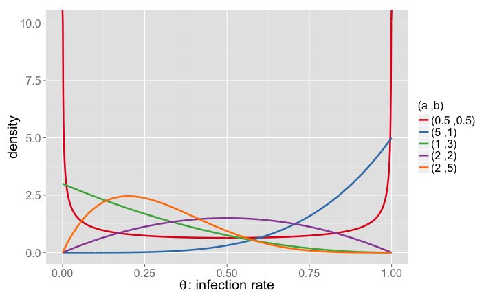
- We select \(a=5\) and \(b=45\) so that
- \(E[\theta] = \frac{a}{a+b} =\) 0.1
- \(\mathrm{mode}[\theta] = \frac{a-1}{a+b-2} =\) 0.0833
- \(P(\theta\in(0.05, 0.20)) =\) 0.8815
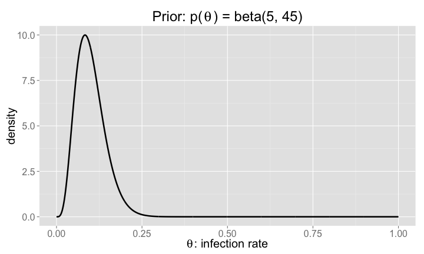
Likelihood
- If the value of \(\theta\) were known, then \(Y\) can be modeled as a binomial distribution \[Y|\theta \sim \mathrm{binomial}(20, \theta)\]
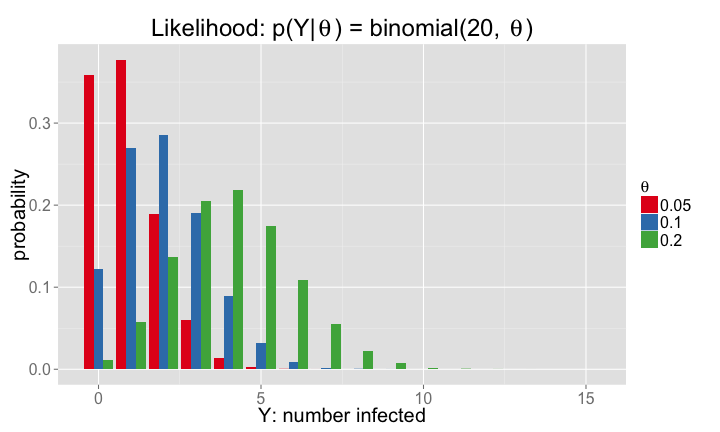
Posterior
- We will see that if \(\theta \sim \mathrm{beta}(a,b)\) and \(Y|\theta \sim \mathrm{binomial}(n, \theta)\), then the posterior distribution is beta too! \[\theta|Y \sim \mathrm{beta}(a+Y,b+n-Y)\]
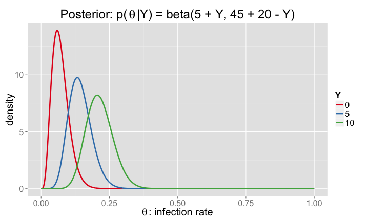
Suppose half of the sampled individuals are infected, i.e. \(Y=10\)
- \(E[\theta|Y=10] = \) 0.2143
- \(\mathrm{mode}[\theta|Y=10] = \) 0.2059
- 95% confidence interval is (0.122, 0.3107), i.e. \[P(\theta \in(0.122, 0.3107) | Y=10) = 95\%\]
Comparison to Frequentist Approach
- No prior information is needed
- Point estimate: \(\hat\theta = \frac{Y}{n}\)
- 95% confidence interval is \(\hat\theta \pm 1.96\sqrt{\frac{\hat\theta(1-\hat\theta)}{n}}\)
- With \(Y=10\), it is \((0.2809, 0.7191)\), much wider than the Bayesian counterparty
- Prior information helps reduce uncertainty!
2. One-parameter Models
Binomial Model
- \(Y\) has binomial distribution with parameter \(n\) and \(\theta\)
- \(n\) is known, \(\theta\) is unknown
- \(Y\) is number of “successes” in \(n\) independent trials
- sum of \(n\) i.i.d. Bernoulli random variables
- Each trial has \(\theta\) probability of success
- Likelihood: \(Y|\theta \sim \mathrm{binomial}(n, \theta)\) \[p(Y|\theta) = {n\choose Y} \theta^Y(1-\theta)^{n-Y}\]
Uniform Prior
- Each value has equal possibility: \(\theta \sim \mathrm{uniform}[0,1]\) \[p(\theta) = 1\]
- A noninformative prior
- Bayes’ rule asserts: \[p(\theta|Y) = \frac{p(Y|\theta)p(\theta)}{p(Y)} = \frac{p(Y|\theta)}{p(Y)}\propto p(Y|\theta)\]
- \(\propto\) means “is proportional to”
- \(p(\theta|Y)\) is proportional to \(p(Y|\theta)\) as a function of \(\theta\)
- because \(p(Y)\) does not depend on \(\theta\)
- Further, we can see that \[p(\theta|Y)\propto \theta^Y(1-\theta)^{n-Y}\]
- So if we assume \(p(\theta|Y) = C \theta^Y(1-\theta)^{n-Y}\) for some constant \(C>0\), then \[C^{-1} = \int_0^1 \theta^Y(1-\theta)^{n-Y}\,\mathrm{d}\theta = B(Y+1, n-Y+1),\] where \(B\) is the beta function, because \(\int_0^1 p(\theta|Y)\,\mathrm{d}\theta = 1\)
- So \[p(\theta|Y) = \frac{\theta^Y(1-\theta)^{n-Y}}{B(Y+1, n-Y+1)},\] i.e. \(\theta|Y \sim \mathrm{beta}(Y+1, n-Y+1)\)
Beta Prior
- \(\theta \sim \mathrm{beta}(a,b)\) \[p(\theta) = \frac{\theta^{a-1}(1-\theta)^{b-1}}{B(a, b)}\]
- Uniform distribution is a special case of beta distribution
- uniform[0,1] = beta(1,1)
- Applying Bayes’ rule \[ \begin{align*} p(\theta|Y) \propto & p(Y|\theta)p(\theta) \\ = & {n\choose Y}\theta^Y(1-\theta)^{n-Y}\times \frac{\theta^{a-1}(1-\theta)^{b-1}}{B(a, b)} \end{align*} \] so \(p(\theta|Y) = C \theta^{a+Y-1}(1-\theta)^{b+n-Y-1}\) for some positive constant \(C\), where
\[ \begin{align*} C^{-1} = & \int_0^1 \theta^{a+Y-1}(1-\theta)^{b+n-Y-1}\,\mathrm{d}\theta \\ = & B(a+Y, b+n-Y) \end{align*} \]
- So the posterior distribution is \(\mathrm{beta}(a+Y, b+n-Y)\), i.e. \[p(\theta|Y) = \frac{\theta^{a+Y-1}(1-\theta)^{b+n-Y-1}}{B(a+Y, b+n-Y)}\]
Conjugacy
- A class \(\mathcal P\) of prior distributions for \(\theta\) is called conjugate for a sampling model \(p(y|\theta)\) if \[p(\theta)\in\mathcal P \Rightarrow p(\theta|y)\in\mathcal P\]
- Conjugate priors make posterior calculations easy
- but might not actually represent our prior information
- Beta prior is conjugate for the binomial sampling model
Combining Information
- \(\theta|Y \sim \mathrm{beta}(a + Y, b + n - Y)\) \[ \begin{align*} E[\theta|Y=y] = & \frac{a+y}{a + b + n} \\ = &\frac{n}{a+b+n}\cdot \hat\theta + \frac{a + b}{a+b+n}\cdot \theta_0 \end{align*} \]
- \(\hat\theta=\frac{y}{n}\) is the frequentist estimate of \(\theta\)
- \(\theta_0=\frac{a}{a+b}\) is the prior expectation of \(\theta\)
- The posterior expectation is the weighted average of \(\hat\theta\) and \(\theta_0\)
- The weight of \(\theta_0\) vanishes as \(n\to\infty\)
- The impact of prior information gradually fades away when the dataset is sufficiently large
Prediction
- Let \(\tilde Y\) be an additional outcome from the same population
- Predictive distribution: \(p(\tilde Y|Y)\)
\[ \begin{align*} & P(\tilde Y = k| Y) \\= & \int P(\tilde Y=k|\theta, Y)p(\theta|Y)\,\mathrm{d}\theta \\ = & \int_0^1 {n\choose k} \theta^k (1-\theta)^{n-k}\cdot \frac{\theta^{a+Y-1}(1-\theta)^{b+n-Y-1}}{B(a+Y, b+n-Y)} \,\mathrm{d}\theta \\ =& {n\choose k}\frac{B(a+Y+k, b+2n-Y-k)}{B(a+Y, b+n-Y)} \end{align*} \]
pred_dist <- function(k, Y, a, b, n) {
choose(n, k) * beta(a + Y + k, b + 2 * n - Y - k)/beta(a + Y, b + n - Y)
}
a <- 5
b <- 45
n <- 20
Y <- 10
pred_dist(seq(0, n), Y, a, b, n)## [1] 1.485e-02 6.022e-02 1.254e-01 1.776e-01 1.914e-01 1.662e-01 1.205e-01
## [8] 7.440e-02 3.970e-02 1.845e-02 7.492e-03 2.661e-03 8.235e-04 2.207e-04
## [15] 5.065e-05 9.792e-06 1.556e-06 1.957e-07 1.831e-08 1.136e-09 3.511e-11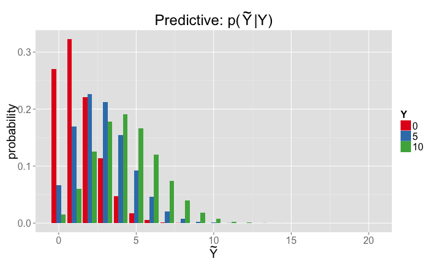
- The predictive distribution does not depend on any unknown quantities
- It is calculated by “integrating out” the uncertainty about \(\theta\)
- \(\tilde Y\) is not independent of \(Y\)
- \(Y\) gives information about \(\theta\), which in turn gives informationa bout \(\tilde Y\)
Confidence Regions
- Regions of the parameter space that cotains the true value of the parameter with high probability
- After observing the data \(Y = y\), construct an interval \([l(y), u(y)]\) such that \(P(l(y)<\theta<u(y))\) is large
- Bayesian coverage: an interval \([l(y),u(y)]\) has \(100(1-\alpha)\%\) Bayesian coverage for \(\theta\) if, after the data are observed, \[P(l(y)<\theta<u(y)|Y=y) = 1-\alpha\]
- Frequentist coverage: a random interval \([l(Y),u(Y)]\) has \(100(1-\alpha)\%\) frequentist coverage for \(\theta\) if, before the data are observed, \[P(l(Y)<\theta<u(Y)|\theta) = 1-\alpha\]
- In a sense, the frequentist and Bayesian notions of coverage describe pre- and post-experimental coverage, respectively.
Quantile-based Intervals
- Remove both tails of \(\alpha/2\) probabilitiy
Use \([\theta_{\alpha/2}, \theta_{1-\alpha/2}]\), where \(\theta_{\alpha/2}\) and \(\theta_{1-\alpha/2}\) are posterior quantiles \[P(\theta < \theta_{\alpha/2}|Y=y) = P(\theta > \theta_{1-\alpha/2}|Y=y) =\alpha/2\]
Easy to implement
a <- 5; b <- 45; n <- 20; Y <- 10;
qbeta(c(0.025, 0.975), a + Y, b + n - Y)## [1] 0.1271 0.3169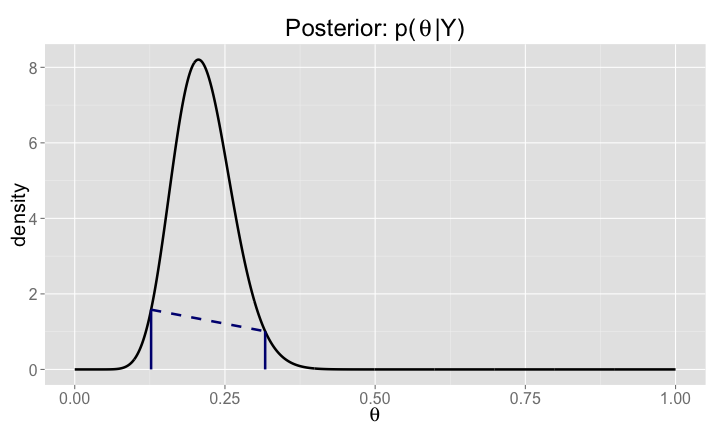
Highest Posterior Density Region
If the posterior distribution is not symmetric, a quantile-based interval excludes some points that have higher density than some points inside the interval
- HPD region: a subset of the parameter space \(s(y)\) such that
- \(P(\theta\in s(y)|Y=y) = 1-\alpha\)
- \(p(\theta_1|Y=y) > p(\theta_2|Y=y)\) for \(\theta_1\in s(y)\) and \(\theta_2\notin s(y)\)
May not be an interval if the posterial density is multimodal, i.e. has multiple peaks
- Harder to implement: usually apply simulation to approximate
a <- 5; b <- 45; n <- 20; Y <- 10;
require(hdrcde)
as.vector(hdr(rbeta(1e5, a + Y, b + n - Y), prob=95)$hdr)## [1] 0.1207 0.3089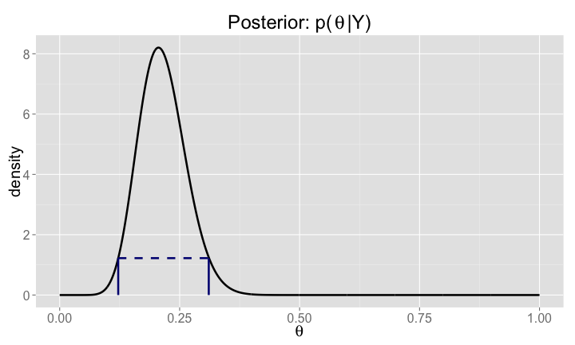
Poisson Model
- Usually models the number of events occurring in a fixed time period
- Likelihood: \(Y|\theta \sim \mathrm{Poisson}(\theta)\) \[p(Y|\theta) = \frac{\theta^Ye^{-\theta}}{Y!}\]
- \(E[Y|\theta] = \mathrm{var}(Y|\theta) = \theta\)
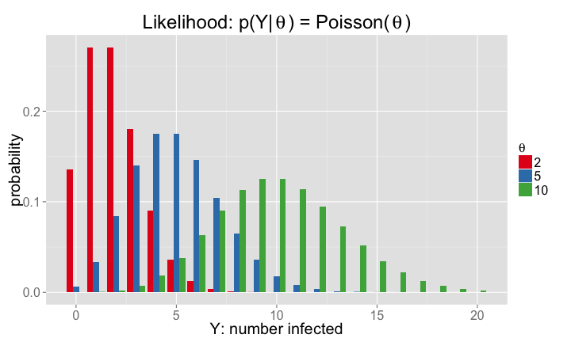
Gamma Prior
- \(\theta \sim \mathrm{Gamma}(a, b)\)
- \(a\) is the shape parameter and \(b\) is the rate parameter \[p(\theta) = \frac{b^a}{\Gamma(a)}\theta^{a-1}e^{-b\theta}\]
- \(E[\theta] = \frac{a}{b}\)
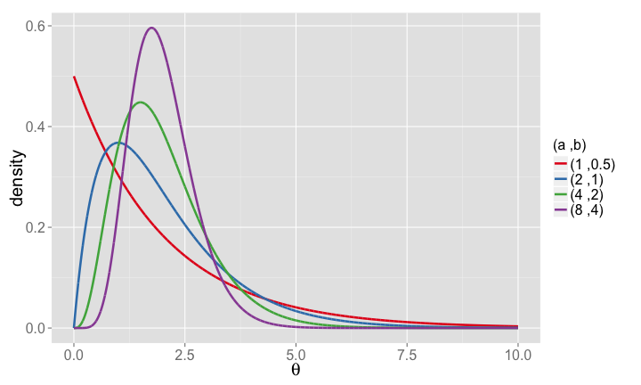
Posterior
- By Bayes’ rule, \[p(\theta|Y) \propto p(Y|\theta)p(\theta)= \frac{\theta^Ye^{-\theta}}{Y!}\times \frac{b^a}{\Gamma(a)}\theta^{a-1}e^{-b\theta} \]
- So \(p(\theta|Y) = C\theta^{a+Y-1}e^{-(b+1)\theta}\), where \[C^{-1} = \int_0^\infty \theta^{a+Y-1}e^{-(b+1)\theta}\,\mathrm{d}\theta = \frac{\Gamma(a+Y)}{(b+1)^{a+Y}}\]
- So \[p(\theta|Y) = \frac{(b+1)^{a+Y}}{\Gamma(a+Y)}\theta^{a+Y-1}e^{-(b+1)\theta},\] i.e. \(\theta|Y\sim\mathrm{Gamma}(a+Y, b+1)\)
- Gamma prior is conjugate for the Poisson sampling model
Combining Information
- Suppose \(Y_1,\ldots,Y_n\) are i.i.d. Poisson
- Then \(\theta|Y_1,\ldots,Y_n \sim \mathrm{Gamma}(a+\sum_{i=1}^nY_i, b+n)\)
\[ \begin{align*} E[\theta|Y_1,\ldots,Y_n] =& \frac{a+\sum_{i=1}^nY_i}{b+n} \\ =& \frac{n}{b+n}\cdot \hat\theta + \frac{b}{b+n}\cdot \theta_0 \end{align*} \]
- \(\hat\theta=\frac{\sum_{i=1}^nY_i}{n}\) is the frequentist estimate of \(\theta\)
- \(\theta_0=\frac{a}{b}\) is the prior expectation of \(\theta\)
- The posterior expectation is the weighted average of \(\hat\theta\) and \(\theta_0\)
- The weight of \(\theta_0\) vanishes as \(n\to\infty\)
- The impact of prior information gradually fades away when the dataset is sufficiently large
Prediction
- The predictive distribution of \(\tilde Y\), an additional outcome from the same population, given the observation \(Y\) \[ \begin{align*} &\textstyle P(\tilde Y=k|Y)\\ =& \int_0^\infty P(\tilde Y=k|\theta )p(\theta|Y)\,\mathrm{d}\theta \\ =& \int_0^\infty \frac{\theta^k e^{-\theta}}{k!}\cdot \frac{(b+1)^{a+Y}\theta^{a+Y-1}e^{-(b+1)\theta}}{\Gamma(a+Y)}\,\mathrm{d}\theta \\ =& \frac{\Gamma(a+Y+k)}{\Gamma(k+1)\Gamma(a+Y)}\left(\frac{b+1}{b+2}\right)^{a+Y}\left(\frac{1}{b+2}\right)^k \end{align*}\]
- So \(\tilde Y|Y\) has a negative binomial distribution with “number of failures” \(a+Y\) and “success probability” \(\frac{1}{b+2}\)
a <- 2; b <- 1; Y <- 5;
dnbinom(seq(0, 10), a + Y, 1 / (b + 2))## [1] 0.0004572 0.0021338 0.0056902 0.0113804 0.0189673 0.0278187 0.0370916
## [8] 0.0459229 0.0535768 0.0595297 0.0634984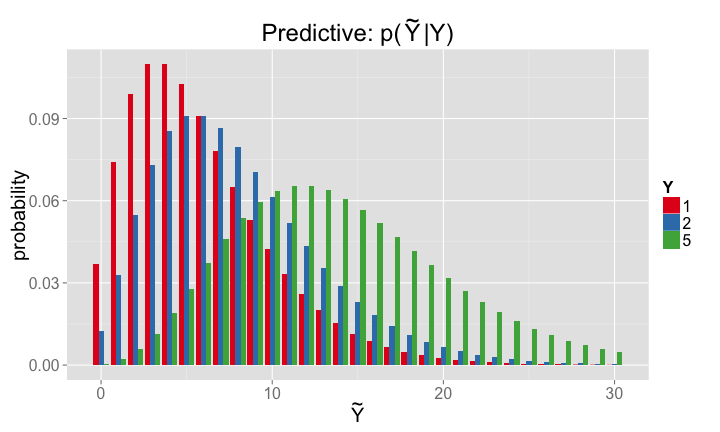
Exponential Families and Conjugate Priors
- Both binomial and Poisson models belong to one-parameter exponential family models, whose densities are of the form \[p(y|\theta)=a(y)e^{\phi(\theta)t(y)+b(\theta)}\]
- Binomial model \[\textstyle \phi(\theta)=\log\left(\frac{\theta}{1-\theta}\right), t(y)=y, b(\theta) = n\log(1-\theta), a(y) = {n\choose y}\]
- Poisson model \[\phi(\theta) = \log\theta, t(y) = y, b(\theta) = -\log(\theta), a(y) = 1\]
- Exponential model \[\phi(\theta) = -\theta, t(y) = y, b(\theta) = \log(\theta), a(y) = 1\]
- Normal model (with \(\sigma^2\) known) \[\textstyle \phi(\theta) = \frac{\theta}{\sigma^2}, t(y) = y, b(\theta) = -\frac{\theta^2}{2\sigma^2}, a(y) = \exp\left(\textstyle-\frac{y^2}{2\sigma^2}\right)\]
- Choose a prior of the form \(p(\theta)=k(\alpha,\beta)e^{\alpha\phi(\theta)+\beta b(\theta)}\)
- Then the posterior is \[p(\theta|Y)\propto e^{(\alpha+t(Y))\phi(\theta)+(\beta+1)b(\theta)}\]
- So the prior is conjugate for the exponential family model
- In general, the posterior conditional on the i.i.d. data \(Y_1,\ldots,Y_n\) is \[p(\theta|Y_1,\ldots,Y_n)\propto e^{(\alpha+\sum_{i=1}^nt(Y_i))\phi(\theta)+(\beta+n)b(\theta)}\]
3. Normal Model
Normal Model
- Normal distribution is probably the most useful probability model in statistics
- supported by central limit theorem
- two parameters, mean \(\mu\) and variance \(\sigma^2\), are often of primary interest
\[p(y|\mu, \sigma^2) =\frac{1}{\sqrt{2\pi\sigma^2}}\textstyle\exp\left(-\frac{(y-\mu)^2}{2\sigma^2}\right),\quad -\infty < y < \infty\]
the distribution is symmetric about \(\theta\), and the mode, median and mean are all equal to \(\theta\)
about 95% of the population lies within two standard deviations of the mean (more precisely, 1.96 standard deviations)
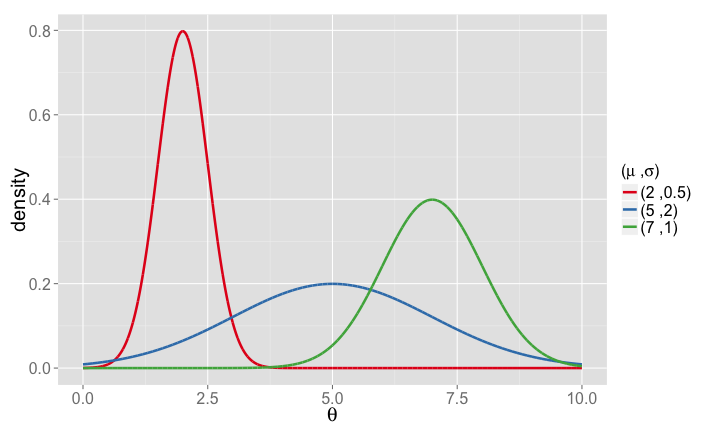
Inference on Mean with Known Variance
- Choose a normal prior on the mean, i.e. \(\mu\sim \mathrm{normal}(\mu_0, \tau_0)\) \[ \begin{align*} p(\mu|Y, \sigma^2) & = \frac{p(\mu|\sigma^2)p(Y|\mu,\sigma^2)}{p(Y|\sigma^2)} \propto p(\mu|\sigma^2) p(Y|\mu,\sigma^2) \\ &\propto \textstyle \exp\left(-\frac{(\mu-\mu_0)^2}{2\tau_0}\right)\exp\left(-\frac{(Y-\mu)^2}{2\sigma^2}\right) \end{align*}\]
- The exponent is quadratic in \(\mu\) so \(p(\mu|Y,\sigma^2)\) is normal with mean \[ \frac{\frac{1}{\tau_0^2}\mu_0+\frac{1}{\sigma^2}Y}{\frac{1}{\tau_0^2}+\frac{1}{\sigma^2}}\] and variance \[\frac{1}{\frac{1}{\tau_0^2}+\frac{1}{\sigma^2}}\]
In general, given i.i.d. normal data \(Y_1,\ldots,Y_n\), if we select a normal prior on \(\mu\), then \(p(\mu|Y_1,\ldots,Y_n,\sigma^2)\) is normal with mean \(\mu_n\) and variance \(\tau_n^2\), where \[\mu_n = \frac{\frac{1}{\tau_0^2}\mu_0+\frac{n}{\sigma^2}\bar{Y}}{\frac{1}{\tau_0^2}+\frac{n}{\sigma^2}}\quad\mbox{and}\quad \tau_n^2=\frac{1}{\frac{1}{\tau_0^2}+\frac{n}{\sigma^2}}\]
- Inverse variance is often called precision and it quantifies the information \[\frac{1}{\tau_n^2}=\frac{1}{\tau_0^2}+\frac{n}{\sigma^2}\]
- Posterior info = prior info + data info
- Precision is increasing in \(n\)
Posterior mean is a weighted average of the prior mean and the sample mean \[\mu_n = \frac{\tau_0^{-2}}{\tau_0^{-2}+n\sigma^{-2}}\mu_0 + \frac{n\sigma^{-2}}{\tau_0^{-2}+n\sigma^{-2}}\bar{Y}\]
Example
- The revenue of a Taobao shop in the past 9 months is as follows (unit: million RMB) and we hope to make inference on the mean monthly revenue.
## [1] 1.82 2.30 1.64 1.52 1.72 1.36 1.74 2.08 1.97- We know the average monthly revenue in million RMB in 2012 is about 2 and its s.d. is about 0.6
- Choose prior on \(\mu\) as \(\mathrm{normal}(2, 0.6^2)\)
- We use the sample variance as \(\sigma^2\)
revenue <- c(1.82, 2.3, 1.64, 1.52, 1.72, 1.36, 1.74, 2.08, 1.97)
n <- length(revenue)
Y_bar <- mean(revenue)
s2 <- var(revenue)
mu_0 <- 2
tau_0 <- 0.6
a <- 1/tau_0^2 + n/s2
b <- mu_0/tau_0^2 + n/s2 * Y_bar
tau_n <- sqrt(1/a)
mu_n <- b/a- So the posterior distribution of the average monthly revenue is normal with mean 1.7996 and s.d. 0.0949
- Its prior is normal with mean 2 and s.d. 0.6
- Sample mean is 1.7944 and sample s.d. is 0.2883
- Remark: posterior s.d. is smaller than both prior s.d. and sample s.d.
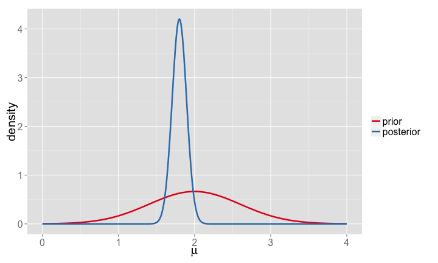
Joint Inference on Mean and Variance
- In the previous example, we assumed \(\sigma^2\) is known and use the sample variance for its value
- Due to the small sample size, the sample variance has a fairly large uncertainty in itself which we have ignored
- Due to the small sample size, the sample variance has a fairly large uncertainty in itself which we have ignored
- Hence, we need to infer \(\mu\) and \(\sigma^2\) at the same time and find a joint prior on \((\mu, \sigma^2)\)
\[p(\mu,\sigma^2|Y_1,\ldots,Y_n) \propto p(Y_1,\ldots,Y_n| \mu,\sigma^2)p(\mu,\sigma^2)\]
- In choosing the joint prior \(p(\mu,\sigma^2)\), note that \[p(\mu,\sigma^2) = p(\mu|\sigma^2)p(\sigma^2)\]
We have seen that if \(\sigma^2\) were known, then a conjugate prior on \(\mu\) is normal so we set \(p(\mu|\sigma^2)\) as normal
We need a distribution that has support on \((0, \infty)\) for \(\sigma^2\) and it turns out Gamma distribution is a crutial element
The joint prior is chosen as follows \[ \begin{align*} \theta|\sigma^2 & \sim \mathrm{normal}\textstyle\left(\mu_0, \frac{\sigma^2}{\kappa_0}\right)\\ \sigma^{-2} & \sim \mathrm{gamma}\textstyle\left(\frac{\nu_0}{2}, \frac{\nu_0\sigma_0}{2}\right) \end{align*} \]
\(\mu_0\) and \(\kappa_0\) can be interpreted as the mean and sample size from a set of prior observations
Then using Bayes’ rule, we can show that (details are left for exercise) \[\{\mu|Y_1,\ldots,Y_n, \sigma^2\} \sim \mathrm{normal}(\mu_n, \sigma^2/\kappa_n),\] where \[\kappa_n = \kappa_0+n\quad\mbox{and}\quad \mu_n=\frac{\kappa_0\mu_0+n\bar{Y}}{\kappa_n},\] and \[\{\sigma^{-2}|Y_1,\ldots,Y_n\} \sim \mathrm{gamma}(\nu_n/2,\nu_n\sigma_n^2/2), \] where \[ \begin{align*} \nu_n &=\nu_0 + n \\ \sigma_n^2 &= \frac{1}{\nu_n}[\nu_0\sigma_0^2 + (n-1)s^2 + \frac{\kappa_0n}{\kappa_n}(\bar{Y}-\mu_0)^2] \end{align*} \] and \(s^2\) is the sample variance of \(Y_1,\ldots,Y_n\)
\(\nu_0\sigma_0^2\) and \(\nu_n\sigma_n^2\) can be interpreted as prior and posterior “sum of squared observations from the sample mean”
Back to Previous Example
- Assume both \(\mu\) and \(\sigma^2\) are unknown
- We know the average monthly revenue in million RMB in 2012 is about 2 and its s.d. is about 0.6
- choose prior parameters \(\mu_0=2\), \(\sigma_0=0.6\), \(\kappa_0=12\) and \(\nu_0 = 12\)
mu_0 <- 2
sigma_0 <- 0.6
kappa_0 <- 12
nu_0 <- 12
n <- length(revenue)
Y_bar <- mean(revenue)
s2 <- var(revenue)
kappa_n <- kappa_0 + n
mu_n <- (kappa_0 * mu_0 + n * Y_bar)/kappa_n
nu_n <- nu_0 + n
sigma_n <- sqrt((nu_0 * sigma_0^2 + (n - 1) * s2 + kappa_0 * n/kappa_n * (Y_bar -
mu_0)^2)/nu_n)The posterior parameters are \(\mu_n = 1.9119\), \(\kappa_n = 21\), \(\nu_n = 21\), and \(\sigma_n^2 = 0.2477\).
The posterior joint distribution of \((\mu,\sigma^2)\) is determined by \[ \begin{align*} \{\mu|Y_1,\ldots,Y_n, \sigma^2\} &\sim \mathrm{normal}(1.9119, \sigma^2/21),\\ \{\sigma^{-2}|Y_1,\ldots,Y_n\} & \sim \mathrm{gamma}(10.5,2.6012), \end{align*} \]
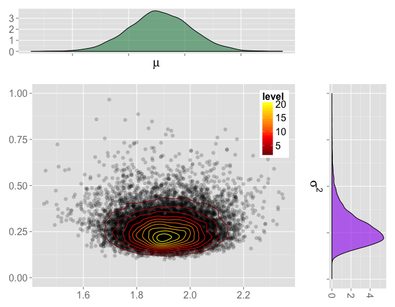
- It can be shown that \(\frac{\mu-\mu_n}{\sigma_n/\sqrt{\kappa_n}}\) has a \(t\)-distribution with \(\nu_n\) degrees of freedom
- This gives the marginal posterior distribution of \(\mu\), i.e. \(p(\mu|Y_1,\ldots,Y_n)\)
- As expected, the uncertainty about the posterior distribution of \(\mu\) is larger when assuming \(\sigma^2\) is unknown
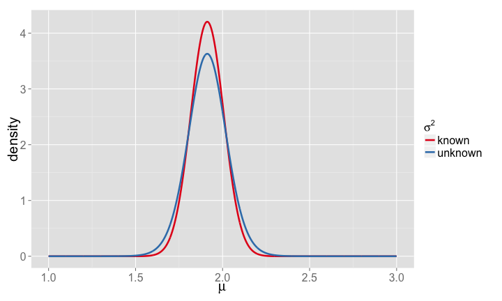
Usage of Conjugate Priors is Limited
- Only exist for simple models/distributions
- Only for computatational reasons
- Keep distribution family fixed and update hyperparameters only
- Restricts our modeling of prior information
- Implies a subjective manipulation of the prior information
- E.g., why is the prior of a binomial distribution necessarily beta distribution?
How do We Deal with Non-conjugate Priors?
- Monte Carlo Simulation!
4. Baisc Monte Carlo
Introduction
Monte Carlo methods are a broad class of computational algorithms that rely on repeated random sampling to obtain numerical results
One runs simulations many times to obtain the information of an unknown probabilistic entity
Mordern version of MC was invented by Stanislaw Ulam in late 1940s, while he was working on nuclear weapons projects at the Los Alamos National Laboratory
- “Monte Carlo” was named after the Monte Carlo Casino in Monte Carlo, Monaco
Buffon’s Needle
- The French naturalist Buffon in 1733 stated a problem: find the probability that a needle of length \(l\) will land on a line, given a floor with equally spaced parallel lines a distance \(d\) apart
- Answer: \(p = \frac{2l}{\pi d}\) when \(d\geq l\)
- We then can use this experiment to estimate the probability \(p\) and then the value of \(\pi\)
Calculating \(\pi\)
- MC is most commonly used to evaluate integrals (including probabilities)
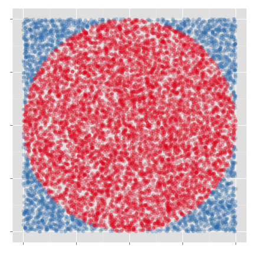
Monte Carlo Integration
Let \(X\) be a random variable with density \(f(x)\) and we are interested in computing \[\mathbb{E}[h(X)] = \int h(x)f(x)\, dx\]
MC generates a sample \(X_1,\ldots,X_n\) from the density \(f\) and approximates the integral with \[\bar{h}_n = \frac{1}{n}\sum_{j=1}^n h(X_j)\]
Convergence (Strong Law of Large Numbers) \[\lim_{n\to\infty}\frac{1}{n}\sum_{j=1}^n h(X_j) = \mathbb{E}[h(X)]\]
Example
- Compute \(\int_0^1 [x^2+4x\sin(x)]\,dx\)
- Exact value is \(\frac{1}{3} + 4[\sin(1)-cos(1)] = 1.538\)
- Write the integral as \(\mathbb{E} [X^2+4X\sin(X)]\) where \(X\sim\mathrm{Uniform}(0,1)\)
N <- 10^4
X <- runif(N)
mean(X^2 + 4 * X * sin(X))## [1] 1.521Errors in MC
- Clearly, the estimation error decreases as the number of replications \(n\) increases
- But can we quantify the error for a given \(n\)?
- Back to the previous exmaple, plot the error against \(n\)
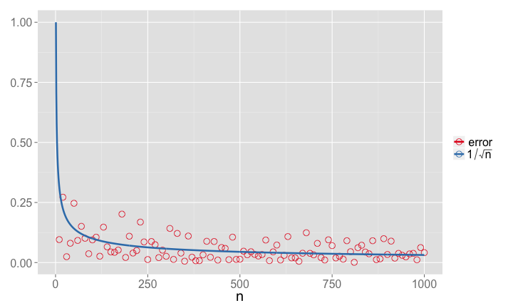
Error is of order \(n^{-1/2}\)
Central Limit Theorem \[\frac{\bar{h}_n - \mathbb{E}[h(X)]}{\sqrt{\mathrm{Var(h(X))}}}\Rightarrow \mathcal N(0, 1)\]
- So error is roughly \(\sqrt{\frac{\mathrm{Var}(h(X))}{n}}\mathcal\cdot N(0, 1)\) when \(n\) is large
However, \(\mathrm{Var(h(X))}\) is usually unknown and instead we use the sample variance \(s_n^2 = \frac{1}{n^2}\sum_{j=1}^n[h(X_j)-\bar{h}_n]^2\) to approximate it
Random Variable Generation
- Use computer to repeatedly produce samples from the target distribution so that the empirical distribution can approximate the true distribution
\[ 0.2\mathcal N(-5, 4) + 0.5\mathcal N(0, 1) + 0.3\mathcal N(3, 0.25) \]
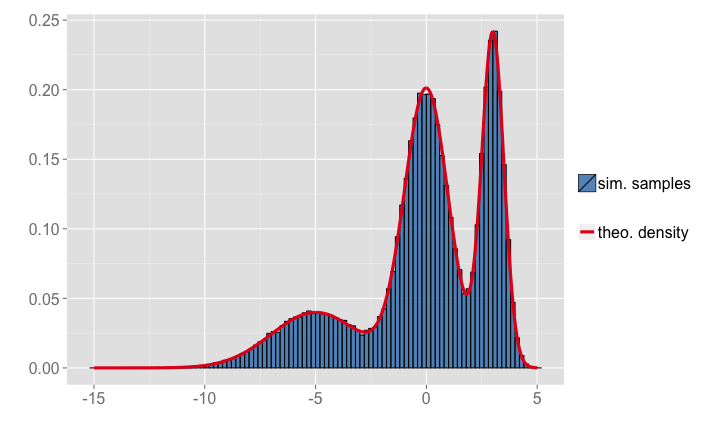
Statistical software packages implement only “standard” probability distributions
- We will be concerned with generating random variables from an arbitrary density
- For example, posterior densities are usually of the form \[p(\theta|Y) \propto p(Y|\theta)p(\theta)\]
Pseudo-random Numbers
Monte Carlo simulation is fundamentally based on the production of uniform random variables between 0 and 1
- Computed-generated uniform random variables are product of a deterministic algorithm and not truely random
- Given the algorithm and the seed, all the subsequent numbers are known with certainty
- However, without these knowledge, they do appear to be random and can pass various statistical tests
- So they’re called pseudo-random numbers
Linear Congruential Generator
- Simple; building block of many advanced methods
- First produces a sequence of integers \[X_{i+1} = (aX_i + c) \mod m,\quad i=0,1,2,\ldots\]
- Initial value \(X_0\) is called seed
Then transform them to numbers between 0 and 1 by \[R_i = \frac{X_i}{m}\]
Shortcoming: period is not long enough for modern usage
- In R,
runifgenerates pseudo-random numbers andset.seedsets random seed- Random seed should be manually set only for the purpose of reproducibility of the results
runif(5)## [1] 0.3173 0.1400 0.5211 0.7444 0.5071runif(5)## [1] 0.8583 0.1479 0.7216 0.6846 0.2722set.seed(123)
runif(5)## [1] 0.2876 0.7883 0.4090 0.8830 0.9405set.seed(123)
runif(5)## [1] 0.2876 0.7883 0.4090 0.8830 0.9405Inverse Transform Method
- If \(X\) has density \(f\) and cumulative distribution function \(F\) \[F(x) = \int^x_{-\infty} f(t)\,dt ,\] then \(F^{-1}(U)\) has the same distribution as \(X\), where \(U\) is the uniform random variable between 0 and 1 and \(F^{-1}\) is the inverse function of \(F\) \[P(F^{-1}(U)\leq x) = P(U \leq F(x)) = F(x)\]
Examples
- If \(X\) has exponential distribution with mean \(\frac{1}{3}\), then \(F(x) = 1 - e^{-3x}\)
- \(F^{-1}(U) = -\frac{1}{3}\log(1-U)\)
N <- 10^4; U <- runif(N);
X <- -log(1 - U) / 3;
mean(X) ## true mean is 1/3## [1] 0.3286sd(X) ## true sd is 1/3## [1] 0.3286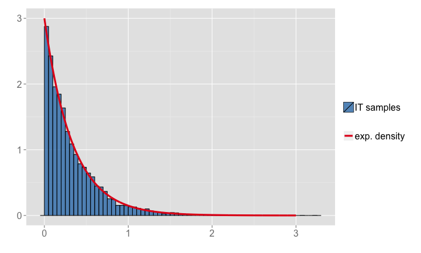
- Cauchy distribution
- Density: \(f(x)=\frac{1}{\pi (1+x^2)}\)
- CDF: \(F(x) = \frac{1}{2} + \frac{1}{\pi}\arctan(x)\)
- \(F^{-1}(u) = \tan\left(\pi\left(u-\frac{1}{2}\right)\right)\)
- Pareto distribution
- Density: \(f(x) = \frac{\alpha}{x^{\alpha+1}}\), \(x\geq 1\)
- CDF: \(F(x) = 1 - \frac{1}{x^\alpha}\)
- \(F^{-1}(u) = \frac{1}{(1-u)^{1/\alpha}}\)
Remarks
- Inverse transform method allows us to transform the uniform distribution to any other distribution in theory
- However, very often the CDF or its inverse function is difficult or even impossible to compute, in which case we resort other approaches
- E.g. normal distribution
N <- 10^6; U <- runif(N);
system.time(qnorm(U, mean=0, sd=1))## user system elapsed
## 0.035 0.002 0.037system.time(rnorm(N, mean=0, sd=1))## user system elapsed
## 0.069 0.000 0.069Acceptance-rejection Method
- Idea: if the target distribution is difficult or impossible to directly simulate, then we simulate a simpler distribution and accept only part of the samples based on certain criteria
Given a target density \(f\), find a density \(g\) and a constant \(M>0\) such that \[f(x) \leq M g(x)\] for all \(x\) on the support of \(f\)
- Generate \(X\) from \(g\) and \(U\) from Uniform[0,1]
- If \(U\leq \frac{f(X)}{Mg(X)}\), accept \(X\)
- Otherwise, reject \(X\) and return to step 1
Illustration
- Generate a random point \((X, Mg(X))\) in the region below the function \(Mg(x)\)
- \(X\) follows density \(g\)
- Accept such a point if and only if it is below the function \(f(x)\)
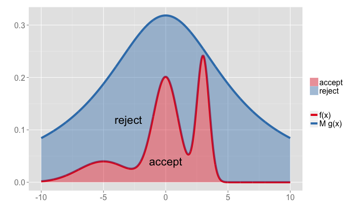
Why?
- The accepted values are conditioned values
- Unconditioned \(X\) has density \(g\), but the accepted \(X\) has density \(f\)
\[ \begin{align*} P(X\leq x | \mathrm{accept}) = & \frac{P(X\leq x, U\leq \frac{f(X)}{Mg(X)})}{P(U\leq \frac{f(X)}{Mg(X)})} \\ = & \frac{\int g(t) P(X \leq x, U\leq \frac{f(X)}{Mg(X)}|X=t)\, dt}{\int g(t) P(U\leq \frac{f(X)}{Mg(X)}|X=t)\, dt} \\ = & \frac{\int_{-\infty}^x g(t) \frac{f(t)}{Mg(t)}\,dt}{\int_{-\infty}^\infty g(t) \frac{f(t)}{Mg(t)}\,dt} = \int_{-\infty}^x f(t)\,dt \end{align*} \]
Remarks
- \(g\) is often called the instrumental density
- An exact upper bound \(M\) is not necessary
- The acceptance rate is \(M^{-1}\), so the smaller \(M\) the better (more efficient)
- The efficiency of the method is determined by how closely \(g\) can imitate \(f\), especially in the tails
- It is necessary for \(g\) to have a “heavier” tail than \(f\)
- It is impossible to use the A-R method to simulate a Cauchy distribution using a normal distribution, but the reverse works well
Example: Normal from Cauchy
- \(f\) is a normal density: \(f(x) = \frac{1}{\sqrt{2\pi}}e^{-x^2/2}\)
- \(g\) is a Cauchy density: \(g(x) = \frac{1}{\pi(1+x^2)}\)
\[\frac{f(x)}{g(x)}=\sqrt{\frac{\pi}{2}}(1+x^2)e^{-x^2/2} \] is maximized at \(x=\pm 1\) and the maximum is \(M=\sqrt{\frac{2\pi}{e}}\)
- So the acceptance rate is \(\sqrt{\frac{e}{2\pi}}\approx 0.6577\)
N <- 10^4
M <- sqrt(2 * pi/exp(1))
samples <- rcauchy(N)
U <- runif(N)
A_or_R <- U <= dnorm(samples)/(M * dcauchy(samples))
accepted_samples <- samples[A_or_R]
mean(accepted_samples)## [1] 0.006658sd(accepted_samples)## [1] 1.014length(accepted_samples)/N ## true P(accept) = 0.6577## [1] 0.6556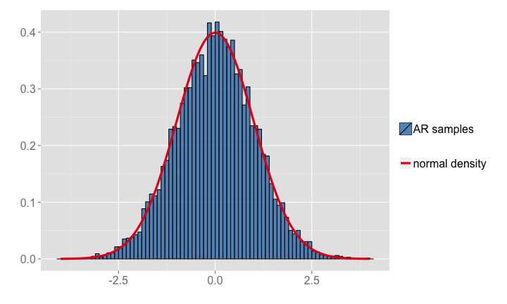
Example: Normal from Doubly Exponential
Cauchy tail \(x^{-2}\) is much heavier than the normal tail \(e^{-x^2}\)
- Try the doubly exponential distribution \(g(x) = \frac{1}{2} e^{-|x|}\)
- lighter than Cauchy but is still heavier than normal
\[\frac{f(x)}{g(x)} = \sqrt{\frac{2}{\pi}}e^{|x|-x^2/2}\] is maximized at \(x=\pm 1\) and the maximum is \(M=\sqrt{\frac{2 e}{\pi}}\)
- The acceptance rate is \(\sqrt{\frac{\pi }{2e}} \approx 0.7602\)
- higher than using Cauchy as the instrumental density
N <- 10^4
M <- sqrt(2 * exp(1)/pi)
samples <- rexp(N) * sample(c(1, -1), N, replace = TRUE)
U <- runif(N)
A_or_R <- U <= dnorm(samples)/(M * 0.5 * dexp(abs(samples)))
accepted_samples <- samples[A_or_R]
mean(accepted_samples)## [1] -0.008401sd(accepted_samples)## [1] 0.9811length(accepted_samples)/N ## true P(accept) = 0.7602## [1] 0.7648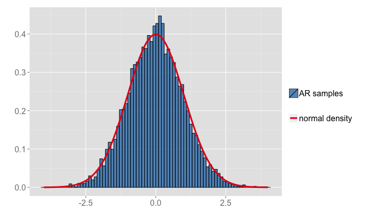
Example: Beta from Uniform
- \(f\) is a beta density: \(f(x) = \frac{x^{a-1}(1-x)^{b-1}}{B(a,b)}\), \(0\leq x\leq 1\), with \(a, b>1\)
- \(g\) is uniform density: \(g(x) = 1\), \(0\leq x\leq 1\)
\[\frac{f(x)}{g(x)} = \frac{x^{a-1}(1-x)^{b-1}}{B(a,b)} \] is maximized at \(x=\frac{a-1}{a+b-2}\) and its maximum is
\[M = \frac{(a-1)^{a-1}(b-1)^{b-1}}{(a+b-2)^{a+b-2}B(a,b)}\]
- Assume \(a = 2.5\) and \(b=4.2\). The acceptance rate is 0.4733
N <- 10^4
a <- 2.5
b <- 4.2
M <- (a - 1)^(a - 1) * (b - 1)^(b - 1)/(a + b - 2)^(a + b - 2)/beta(a, b)
samples <- runif(N)
U <- runif(N)
A_or_R <- U <= dbeta(samples, a, b)/M
accepted_samples <- samples[A_or_R]
mean(accepted_samples) ## true mean is a/(a+b) = 0.3731## [1] 0.3745var(accepted_samples) ## true variance is ab/(a+b)^2/(a+b+1) = 0.0304 ## [1] 0.03065length(accepted_samples)/N ## true P(accept) = 0.4733## [1] 0.4675
Remarks
- If the target density \(f\) has a bounded support, then we can always choose the uniform distribution on the support of \(f\) as the instrumental density
- Then, \(M=\max_x f(x)\)
5. Markov Chain Monte Carlo
Introduction
- The posterior distribution in Bayesian statistics is of the form \(p(\theta|y) \propto p(\theta)p(y|\theta)\)
- So it is often known up to a normalizing constant, i.e. \(p(\theta|y) = C p(\theta)p(y|\theta)\) for some \(C>0\) but \(C\) is difficult or impossible to compute
- The basic idea of MCMC is to construct a Markov chain whose stationary distribution is the distribution of interest
- The normalizing constant is not necessary in the process
- The literature on MCMC is enormous
- Monte Carlo Statistical Methods, C. P. Robert and G. Casella, 2nd ed., 2004
- We only introduce three simple MCMC algorithms, but their usage dominates in a great number of applications
- Slice sampler
- Metropolis-Hastings algorithm
- Gibbs sampler
Slice Sampler
- Fundamental Theorem of Simulation: Simulating \(X\sim f(x)\) is equivalent to simulating \[(X, U) \sim \mathrm{Uniform}\{(x,u):0\leq u\leq f(x)\}\]
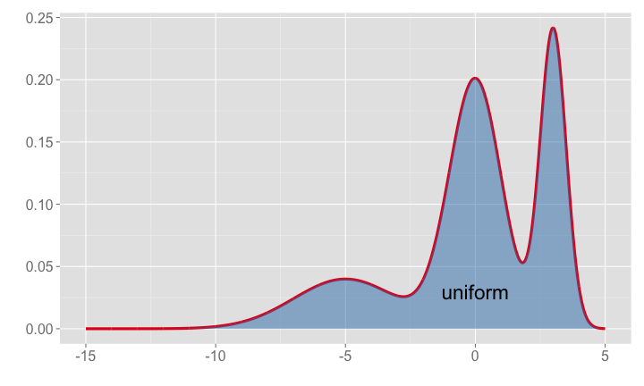
Idea
- Construct a random walk in the region \(A=\{(x,u):0\leq u\leq f(x)\}\), whose stationary distribution is the uniform distribution on \(A\)
- Do random jumps alternately in vertical and horizontal directions
- Vertical: uniform on \(\{u: 0\leq u\leq f(x)\}\)
- Horizontal: uniform on \(\{x: f(x)\geq u\}\), i.e. “slice”
Slice Sampler Algorithm
For \(t=1,\ldots,T\), when at \((x^{(t)}, u^{(t)})\) simulate
- \(u^{(t+1)} \sim \mathrm{Uniform}(0, f(x^{(t)}))\)
- \(x^{(t+1)} \sim \mathrm{Uniform}(A^{(t+1)})\), where \(A^{(t+1)} = \{x: f(x)\geq u^{(t+1)}\}\).
Then, \(\{x^{(t)}:t=1,\ldots,T\}\) are samples generated from \(f(x)\)
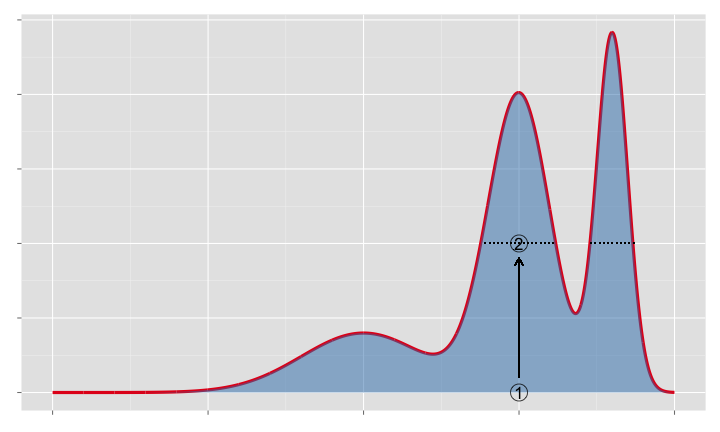
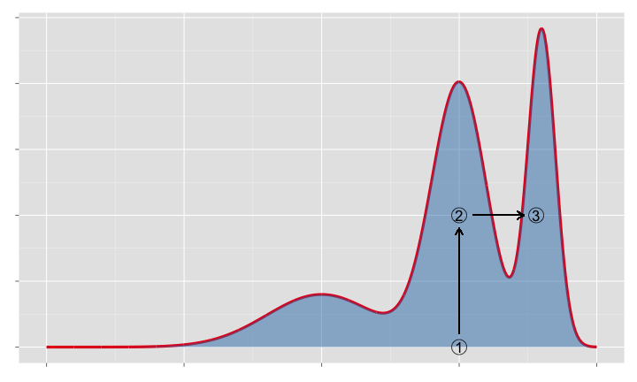
Example 1
- Target density \(f(x) = \frac{1}{2}e^{-\sqrt{x}}\), \(x\geq 0\)
- Vertical: \(U|x \sim \mathrm{Uniform}(0, \frac{1}{2}e^{-\sqrt{x}})\)
- Horizontal: \(X|u \sim \mathrm{Uniform}(0, \log^2(2u))\)
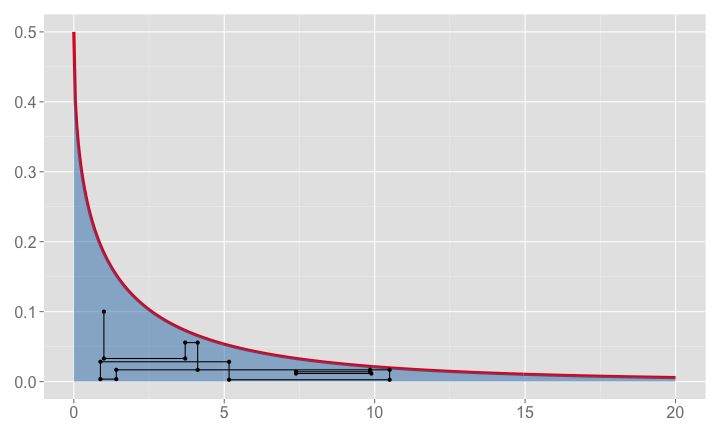
T <- 10^4
x <- rep(1, T)
y <- rep(0.1, T)
for (t in 1:(T - 1)) {
y[t + 1] <- runif(1, 0, exp(-sqrt(x[t]))/2)
x[t + 1] <- runif(1, 0, (log(2 * y[t + 1]))^2)
}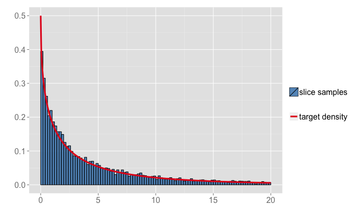
Example 2 (Truncated Normal)
Target density: \(f(x)\propto f_1(x)=e^{-(x+3)^2/2}\mathbb{I}_{[0, 1]}(x)\)
- Vertical: \(U|x \sim \mathrm{Uniform}(0, e^{-(x+3)^2/2})\)
Horizontal: \(X|u \sim \mathrm{Uniform}(0, \min(1,\sqrt{-2\log(u)}-3))\)
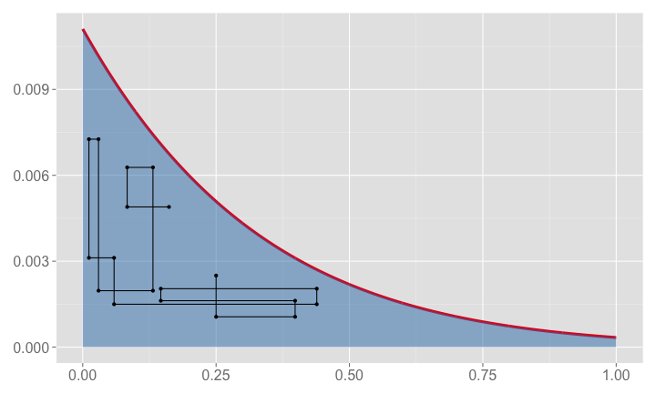
T <- 10^4
x <- rep(0.25, T)
y <- rep(0.0025, T)
for (t in 1:(T - 1)) {
y[t + 1] <- runif(1, 0, exp(-(x[t] + 3)^2/2))
x[t + 1] <- runif(1, 0, min(1, sqrt(-2 * log(y[t + 1])) - 3))
}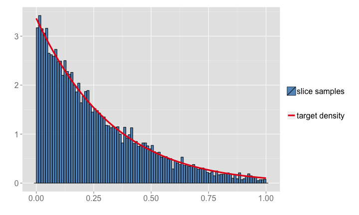
Remarks
\(\{x^{(t)}:t=1,\ldots,T\}\) form a Markov chain and its stationary distribution has the target density \(f(x)\)
Advantage: it does not need an instrumental distribution or the normalizing constant of the target distribution
Disadvantage: it may be difficult to compute the region \(\{x: f(x)\geq u\}\), especially for multi-dimensional cases
Metropolis-Hastings Algorithm
Metropolis algorithm was proposed in 1953
Hastings generalized the algorithm in 1970 and introduced it to the statistics community
- Generate a sequence of samples that form a Markov chain whose stationary distribution is the target distribution
- The next sample value is dependent only on the current sample value
- At each iteration, a candidate is proposed from a simple distribution and then an acceptance-rejection step is done
- The next sample value is dependent only on the current sample value
- Similar as the acceptance-rejection method, the MH algorithm requires an instrumental distribution \(q(y|x)\) that is easy to simulate from
For \(t=1,\ldots, T\), when at \(x^{(t)}\)
Simulate \(y_t\sim q(y|x^{(t)})\)
Simulate \(U\sim \mathrm{Uniform}(0,1)\) and take \[x^{(t+1)} = \left\{ \begin{array}{ll} y_t, & \mbox{if } U \leq \frac{f(y_t)}{f(x^{(t)})}\frac{q(x^{(t)}|y_t)}{q(y_t|x^{(t)})}\\ x^{(t)}, & \mbox{otherwise.} \end{array} \right.\]
Remarks
\(x^{(1)}, x^{(2)}, \ldots\) are correlated
- The chain may take the same value several times in a row
- Possibly gets stuck if the acceptance rate is too low
- The warm-up period must be discarded to alleviate the initialization bias
- E.g., discard \(\{x^{(t)}:t=1,\ldots,\tau\}\) and only use \(\{x^{(t)}:t=\tau+1,\ldots,T\}\) to approximate the target distribution
Never move to values with \(f(y)=0\)
- Only depends on ratios \(f(y)/f(x)\) and \(q(x|y)/q(y|x)\)
- Independent of normalizing constants
Always accepts \(y_t\) such that \[\frac{f(y_t)}{q(y_t|x^{(t)})} > \frac{f(x^{(t)})}{q(x^{(t)}|y_t)}\]
If \(y_t\) decreases the ratio, it is sometimes rejected but may still be accepted
- There are two typical variants
- Independent MH
- Random walk MH
Independent Metropolis-Hastings
- Instrumental distribution \(q\) is independent of the current position \(x^{(t)}\), i.e. \(q(y|x) = g(y)\)
For \(t=1,\ldots, T\), when at \(x^{(t)}\)
Simulate \(y_t\sim g(y)\)
Simulate \(U\sim \mathrm{Uniform}(0,1)\) and take \[x^{(t+1)} = \left\{ \begin{array}{ll} y_t, & \mbox{if } U\leq \frac{f(y_t)}{f(x^{(t)})}\frac{g(x^{(t)})}{g(y_t)} \\ x^{(t)}, & \mbox{otherwise.} \end{array} \right.\]
Remarks
Can be viewed as a generalization of the Acceptance-Rejection method
- The A-R sample is i.i.d., whereas the MH sample is correlated
- The A-R acceptance step requires the calculation of \(M\) (i.e. \(f(x)\leq Mg(x)\)), where MH does not
- Independent MH is A-R “for lazy people”
- It can be shown that if \(f(x)\leq Mg(x)\), then the acceptance rate of independent MH is at least \(1/M\)
- So independent MH accepts more proposed samples than A-R at the cost of losing independence among samples
Example
- Target: \(f(x) =\frac{1}{\sqrt{2\pi}} e^{-x^2/2}\)
Instrumental: \(g(x) = \frac{1}{2}e^{-|x|}\)
The acceptance probability in independent MH is \[\min\{1, \exp[(|x^{(t)}|-|y_t|)((|x^{(t)}|+|y_t|) / 2-1)]\}\]
N <- 10^4; x <- rep(0, N); accept_count <- 0;
y <- rexp(N) * sample(c(1, -1), size=N, replace=TRUE) ## simulate double exp.
U <- runif(N)
for (t in 1:(N-1)){
if (U[t] <= exp((abs(x[t])-abs(y[t])) * ((abs(x[t]+abs(y[t])))/2-1))){
accept_count <- accept_count + 1
x[t+1] <- y[t]
}
else
x[t+1] <- x[t]
}
accept_count / N ## acceptance rate for A-R is 0.7602## [1] 0.8402- Despite of more efficient use of proposed samples (higher acceptance rate), the MH sample approximates the target distribution worse than the A-R samples
- A-R is exact, while MH needs the Markov chain to converge to the target distribution and any finite sample is merely an approximation
- “Penalty for being lazy!”
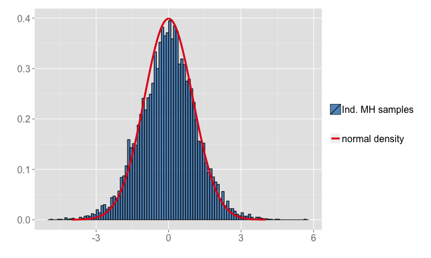
Random Walk Metropolis-Hastings
This is the original algorithm in Metropolis et al. (1953), thus called the Metropolis algorithm
- Independent MH is sometimes difficult to implement
- Construction of instrumental distribution may be difficult
- Instrumental distribution is a global proposal and ignores local information: \(q(y|x)\) is independent of \(x\)
- Simulate \(y_t = x^{(t)} + \epsilon_t\), where \(\epsilon_t\) is random perturbation
- \(\epsilon_t\) independent of \(x^{(t)}\), having a symmetric distribution \(g\) with mean 0
- Instrumental distribution \(q(y|x) = g(y-x)\)
For \(t=1,\ldots, T\), when at \(x^{(t)}\)
Simulate \(y_t \sim g(y - x^{(t)}) \)
Simulate \(U\sim \mathrm{Uniform}(0,1)\) and take \[x^{(t+1)} = \left\{ \begin{array}{ll} y_t, & \mbox{if } U\leq \frac{f(y_t)}{f(x^{(t)})} \\ x^{(t)}, & \mbox{otherwise.} \end{array} \right.\]
Remarks
- Given a proposed candidate \(y_t\), its acceptance probability is independent of \(g\)
- However, the overal acceptance rate of the algorithm does depend on \(g\)
- It determines how the algorithm explores the state space to propose candidates
- If a candidate is a more probable than the current point (i.e. \(f(y_t)\geq f(x^{(t)})\)), then we always accept the move
Otherwise, we sometimes reject the move; the more relative drop in likelihood, the more likely we are to reject the move
So in the long run, the chain tends to stay in high-density regions of \(f(x)\), while occasionally visiting low-density regions
Example
- Target: \(f(x) = \frac{1}{2}e^{-x^2/2}\)
- Instrumental: \(g(x) = \frac{1}{2\delta}\) for \(x\in[-\delta, \delta]\)
- \(\delta\) controls the “scale” of the random walk
- small \(\delta\) means high acceptance rate
- The acceptance probability in random walk MH is \[\min\{1, \exp[({x^{(t)}}^2-y_t^2)]/2\}\]
N <- 10^4; x <- rep(0, N); delta <- 0.1; accept_count <- 0;
epsilon <- runif(N, -delta, delta) ## simulate uniform on [-delta, delta]
U <- runif(N)
for (t in 1:(N-1)){
y_t <- x[t] + epsilon[t]
if (U[t] <= exp((x[t]^2 - y_t^2)/2)){
accept_count <- accept_count + 1
x[t+1] <- y_t
}
else
x[t+1] <- x[t]
}
accept_count / N; ## maybe too high... ## [1] 0.981- Unlike the acceptance-rejection method, having a high acceptance rate is not necessarily desirable for random walk MH.
- It may lead to poor exploration of the tails of the target density and slow convergence to the stationary distribution
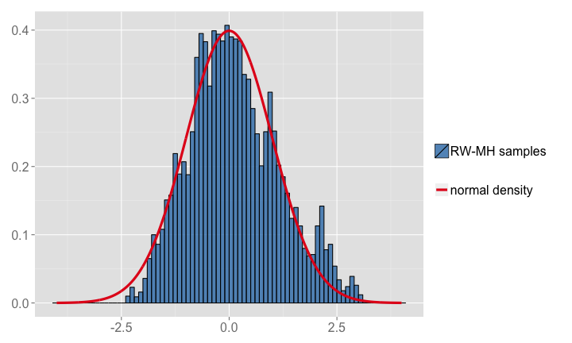
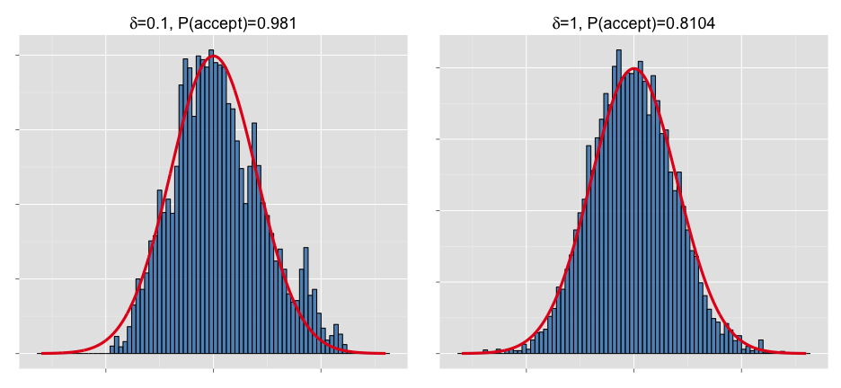
Optimizing Acceptance Rate
How do we choose the instrumental distribution \(q\) when developing a MH algorithm?
- A criterion is the acceptance rate
- It can be easily estimated by the empirical frequency of acceptance
In contrast to the A-R method, maximizing the acceptance rate is not neccesarily the best, especially for random walk MH
For independent MH, we can optimize the algorithm by maximizing acceptance rate
- For random walk MH, it gets more complicated…
- If the acceptance rate is high, the random walk is moving too slowly on the surface of \(f\), and it may get stuck in a high-density region
- If the acceptance rate is low, the random walk is moving too quickly on the surface of \(f\), and it may miss an important but isolated mode of \(f\)
- Nevertheless, a low acceptance rate is less of an issue
- Target is a normal mixture \(0.2\mathcal N(-5, 4) + 0.5\mathcal N(0, 1) + 0.3\mathcal N(3, 0.25)\)
- Instrumental is normal with mean 0 and sd \(\delta\) for RW-MH
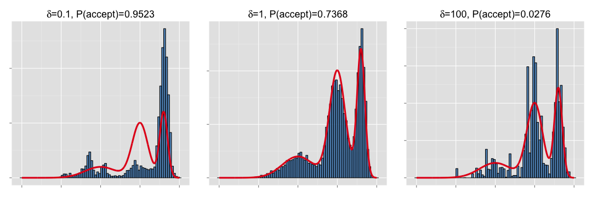
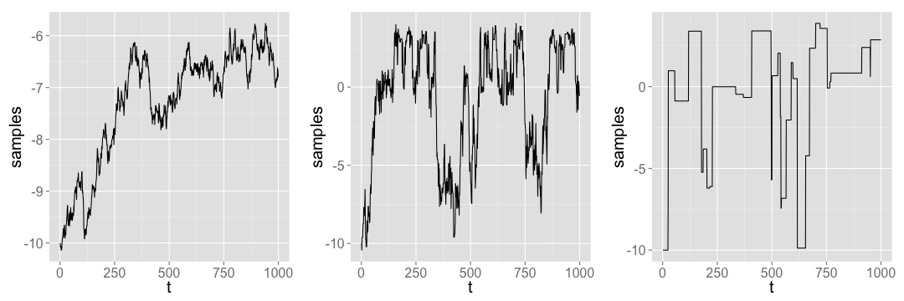
- Gelman, Gilks and Roberts (1995) suggested:
In small dimensions, aim at an average acceptance rate of 50%. In large dimensions, at an average acceptance rate of 25%.
Gibbs Sampler
Proposed by S. Geman and D. Geman in 1984
Named after the physicist J. Gibbs in reference to an analogy between the algotirhm and statistical physics
- Used to simulate a multivariate distribution
- Decompose joint distribution into a sequence of one-dimensional conditional distributions
Target \(f\) is the joint distribution of \(\mathbf{X}=(X_1,\ldots,X_n)\)
Suppose we can simulate from the full conditionals \[X_i | \mathbf{x}_{-i} \sim f_i(x_i| \mathbf{x}_{-i})\] for \(i=1,\ldots,n\), where \(\mathbf{x}_{-i} = (x_1,\ldots,x_{i-1}, x_{i+1},\ldots,x_n)\)
Then we can construct a Markov chain \(\{\mathbf{X}^{(t)} \}\) whose stationary distribution is \(f\)
For \(t=1,\ldots, T\), given \(\mathbf{x}^{(t)} = (x^{(t)}_1,\ldots,x^{(t)}_n)\), simulate
\(X^{(t+1)}_1 \sim f_1(x_1| \mathbf{x}_2^{(t)}, \mathbf{x}_3^{(t)},\ldots, \mathbf{x}_n^{(t)})\)
\(X^{(t+1)}_2 \sim f_2(x_2| \mathbf{x}_1^{(t+1)}, \mathbf{x}_3^{(t)},\ldots, \mathbf{x}_n^{(t)})\) \[\vdots\]
\(X^{(t+1)}_n \sim f_n(x_n| \mathbf{x}_1^{(t+1)}, \mathbf{x}_2^{(t+1)},\ldots, \mathbf{x}_{n-1}^{(t+1)})\)
Example
Target is \(f(x,y) \propto e^{-(x^2y^2+x^2+y^2-8x-8y)/2}\)
The full conditionals are \[f(x|y) \propto e^{-[(y^2+1)x^2-8x]/2} \] and \[f(y|x) \propto e^{-[(x^2+1)y^2-8y]/2}\]
Noting the quadratic form in the exponent, the full conditionals are simply normal distributions \[x|y \sim \mathcal N\left(4/(1+y^2), 1/(1+y^2)\right)\] and \[y|x \sim \mathcal N\left(4/(1+x^2), 1/(1+x^2)\right)\]
N <- 10^4; x <- rep(0, N); y <- rep(0, N);
for (t in 1:(N-1)){
x[t+1] <- rnorm(1, mean=4/(1+y[t]^2), sd=1/sqrt(1+y[t]^2))
y[t+1] <- rnorm(1, mean=4/(1+x[t+1]^2), sd=1/sqrt(1+x[t+1]^2))
}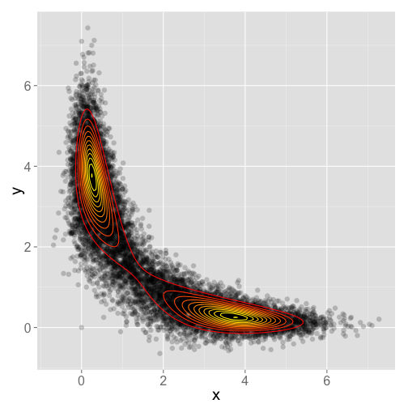
Summary
Slice sampler does not need an instrumental distribution but requires one to compute the “inverse” of the density function
- Metropolis-Hastings requires carefully choosing an instrumental distribution
- Independent MH: instrumental density should have “heavier” tails (similar as A-R method) than the target density to guarantee convergence; it can be optimized by maximizing acceptance rate
- Random walk MH: more complicated… high acceptance rate is not necessarily desirable and low acceptance rate is less of an issue
Gibbs sampler converts a multi-dimensional distribution to a sequence of one-dimensional conditional distributions (i.e. full conditionals)
6. An Application in Finance
Background
Companies may default especially in a bad economy
\(N(t)\) is the accumulated number of defaults since time 0
\(x(t)\) is the “state” of the economy, which can not be observed directly
- \(N(t)\) can be modeled as doubly stochastic Poisson process with arrival rate \(\lambda(t)\)
- Conditional on \(\{\lambda(t):0\leq t\leq T\}\), \(\{N(t):0\leq t\leq T\}\) is an inhomogeneous Poisson process, i.e. \(N(t)\) has a Poisson distribution with mean \(\int_0^t \lambda(s)\, ds\)
Assume \(\lambda(t)=\mu e^{x(t)}\) and \[d x(t) = - x(t) dt + \sigma d W(t),\] where \(W(t)\) is a standard Brownian motion
We are concerned with the estimation of the parameters \(\Theta=(\mu, \kappa, \sigma)\)
- This model can be discretized into a state space model \[ \left\{ \begin{array}{l} Y_t | x_t, \Theta \sim \mathrm{Poisson}(\mu e^{x_t}) \\ x_t | x_{t-1}, \Theta \sim \mathrm{Normal}((1-\kappa)x_{t-1}, \sigma^2) \end{array} \right. \] where \(Y_t = N(t) - N(t-1)\) is the number of defaults during \([t-1, t]\)
T <- 100;
kappa <- 0.3; sigma <- 0.1; mu <- 5;
x_0 <- 0;
x <- rep(x_0, T+1);
for (t in 1:T)
x[t+1] <- rnorm(1, mean=(1-kappa)*x[t], sd=sigma)
y <- rpois(T, mu*exp(x[2:(T+1)]))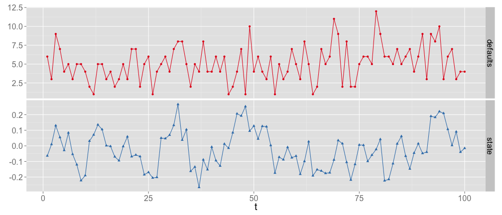
A challenge here, and also for other state space models, is that the “states” are unobservable (i.e. latent variables)
- Maximum likelihood estimation typically fails for state space models because all the latent variables must be “integrated out” in order to compute the likelihood function
- Exceptions include linear Gaussian models and hidden Markov chains with finite state space
Given the data \(\mathbf Y=\{Y_1,\ldots, Y_T\}\), Bayesian inference is interested in the joint posterior distribution of the parameters \(\Theta\) and the state variables \(\mathbf{x}=(x_1,\ldots,x_T)\) \[p(\Theta, \mathbf x|\mathbf Y)\]
Bayesian Analysis
- Gibbs sampler indicates we can simulate full conditionals
- \(p(\mu|\kappa, \sigma^2, \mathbf x,\mathbf Y)\)
- \(p(\kappa|\mu, \sigma^2, \mathbf x,\mathbf Y)\)
- \(p(\sigma^2|\mu,\kappa, \mathbf x,\mathbf Y)\)
- \(p(x_t|\mu,\kappa, \sigma^2,\mathbf x_{-t}, \mathbf Y)\), \(t=1,\ldots, T\)
- Conjugate priors can be found for the first three but the last one needs Metropolis-Hastings
- We first write down the complete likelihood \(p(\mathbf Y, \mathbf x|\Theta)\) \[ \begin{align*} p(\mathbf Y, \mathbf x|\Theta) =& \prod_{t=1}^T p(Y_t|x_t, \mu)p(x_t|x_{t-1},\kappa,\sigma^2) \\ \propto & \prod_{t=1}^T (\mu e^{x_t})^{Y_t}e^{-\mu e^{x_t}}\cdot e^{-[x_{t}-(1-\kappa)x_{t-1})]^2 / (2\sigma^2)} \end{align*}\] where \[p(Y_t|x_t, \mu) = \frac{(\mu e^{x_t})^{Y_t}}{Y_t!}e^{-\mu e^{x_t}}\] and \[p(x_t|x_{t-1},\kappa,\sigma^2) = \frac{1}{2\sigma^2}e^{-[x_{t}-(1-\kappa)x_{t-1})]^2 / (2\sigma^2)}\]
Assume the priors of the parameters are independent
Assume \(p(\mu)\) is Gamma with shape \(a_1\) and rate \(b_1\), \[ \begin{align*} p(\mu|\kappa, \sigma^2, \mathbf x,\mathbf Y) \propto & p(\mu|\kappa, \sigma^2) p(\mathbf Y, \mathbf x|\mu, \kappa, \sigma^2) \\ \propto & p(\mu) \prod_{t=1}^T p(Y_t|x_t, \mu) \\ \propto & \mu^{a_1-1}e^{-b_1\mu} \prod_{t=1}^T (\mu e^{x_t})^{Y_t}e^{-\mu e^{x_t}} \\ \propto & \mu^{a_1-1+\sum_t Y_t} \cdot e^{-\mu (b_1+\sum_t e^{x_t})} \end{align*} \] so \(p(\mu|\kappa, \sigma^2, \mathbf x,\mathbf Y)\) is Gamma with shape \(a_1+\sum_t Y_t\) and rate \(b_1+\sum_t e^{x_t}\)
Exercise 1
Assume \(p(\kappa)\) is normal with mean \(a_2\) and variance \(b_2^2\). Then \(p(\kappa|\mu, \sigma^2, \mathbf x,\mathbf Y)\) is normal with mean \(B/A\) and variance \(1/A\), where \[A = 1/b_2^2 + \textstyle\sum_t x_t^2/\sigma^2\] and \[B = a_2/b_2^2 - \textstyle\sum_t x_{t-1}(x_t-x_{t-1})/\sigma^2\]
Exercise 2
Assume \(p(\sigma^2)\) is inverse Gamma (i.e. \(p(1/\sigma^2)\) is Gamma) with shape \(a_3\) and rate \(b_3\). Then \(p(\sigma^2|\mu,\kappa, \mathbf x,\mathbf Y)\) is inverse Gamma with shape \(a_3+T/2\) and scale \[b_3+\textstyle\sum_t[x_t-(1-\kappa)x_{t-1}]^2/2\]
Exercise 3
\(p(x_t|\mathbf x_{-t}, \mathbf Y, \Theta) \propto p(x_{t+1}|x_t, \Theta)p(x_t|x_{t-1}, \Theta)p(Y_t|x_t, \Theta)\), where \[ \begin{align*} p(x_{t+1}|x_t, \Theta)\propto & \exp\left(\textstyle-\frac{[x_{t+1}-(1-\kappa)x_t]^2}{2\sigma^2}\right) \\ p(x_{t}|x_{t-1}, \Theta)\propto & \exp\left(\textstyle-\frac{[x_{t}-(1-\kappa)x_{t-1}]^2}{2\sigma^2}\right) \\ p(Y_t|x_t, \Theta) \propto & \exp\left(\textstyle-\mu e^{x_t}+x_tY_t\right) \end{align*}\]
Note that the tail of \(p(x_t|\mathbf x_{-t}, \mathbf Y, \Theta)\) is of the order \(\exp(-\mu e^{x_t})\), which is very light
- So we can use independent Metropolis-Hastings with a normal instrumental density
- The mean is chosen to be 0 since \(x(t)\) is an OU process with long-run average 0
MCMC Algorithm
For \(k=1,\ldots, n\), given \((\mu^{(k)}, \kappa^{(k)}, \sigma^{(k)}, \mathbf x^{(k)})\),
Simulate \(\mu^{(k+1)}\) from Gamma posterior \(p(\mu|\kappa^{(k)}, \sigma^{(k)}, \mathbf x^{(k)})\)
Simulate \(\kappa^{(k+1)}\) from normal posterior \(p(\kappa|\mu^{(k+1)}, \sigma^{(k)}, \mathbf x^{(k)})\)
Simulate \({\sigma^{(k+1)}}^2\) from inverse Gamma posterior \(p(\sigma^2|\mu^{(k+1)}, \kappa^{(k+1)}, \mathbf x^{(k)})\)
Use independent MH to iteratively simulate \(x^{(k+1)}_t\) from \(p(x_t|\mu^{(k+1)}, \kappa^{(k+1)}, \sigma^{(k+1)}, x_1^{(k+1)}, \ldots, x_{t-1}^{(k+1)}, x_{t+1}^{(k)},\ldots,x_T^{(k)} )\), for \(t=1,\ldots, T\), with a normal instrumental density with mean 0
## mu kappa sigma
## 5.0689 0.3321 0.1101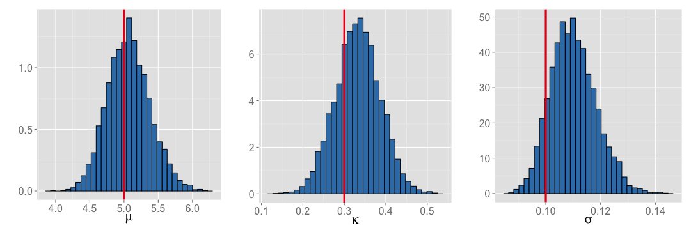
Summary
Bayesian inference + MCMC is powerful!
However, fine turning instrumental distributions and hyperparameters requires great effort!
Do not blindly trust the results. If something is counter-intuitive, make sure find out why!